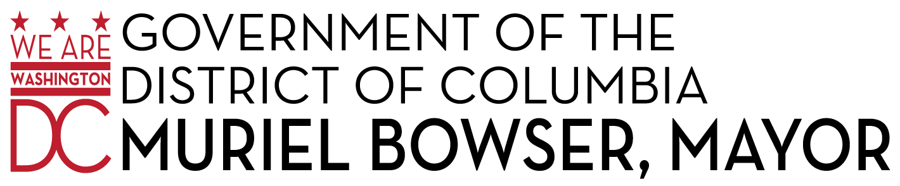

Stronger evidence for a stronger DC
The Lab @ DC is a scientific team in Mayor Muriel Bowser's administration, based in the Office of the City Administrator. DC residents deserve a government that asks questions, tests policies, and iteratively improves how it serves the community. The Lab @ DC partners with District agencies to do just that.

Whether you're a District resident, District employee, researcher, or simply excited about evidence-based governance, we want to know you!
Sign UpFrom The Lunch @ DC to special events, we're always looking to spread ideas. Join us for The Lunch @ DC, our twice monthly, guest speaker series with leaders in their field. It’s a time to learn, discuss, and socialize!
UpcomingJoin us as we bring researchers and practitioners together to discuss the most pressing questions for our city. Subscribe wherever you listen to podcasts.
ListenThe Lab is supported by a generous $3.2 million grant from the Laura and John Arnold Foundation. We work with a wide range of agencies, universities, industry, non-profits, and other community groups. Our team comes from diverse professional backgrounds – public sector, private sector, military, and academia – and areas of expertise – public policy, psychology, economics, political science, data science, public health and law to name a few. Our common bond is our passion for public service and evidence. Collectively, we have decades of applied experience tackling important policy questions at the local, state, and federal level, and plan to earn decades more experience in DC.
Design policy and program interventions that are tailored to the District, based on theory and evidence from academic and industrial research, as well as analyses of available administrative data.
Conduct high-quality evaluations—including randomized evaluations and rapid, iterative experimentation—to learn how well things work and how to improve.
Foster a scientific community of practice, engaging and collaborating with experts and stakeholders across agencies, universities, and community groups.
We're working on a variety of projects, from body cameras to improve policing, to flexible rent programs to address homelessness, to a Form-a-Palooza to systematically improve all government forms. To learn more about these and other projects, visit our project pages on the Open Science Framework.
Projects{{i.title}}